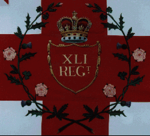
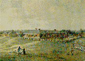
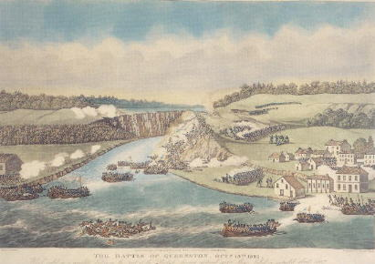
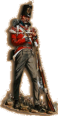

Thomas Noble was born in Derby, England, and christened on 6th April 1777 at St Werburghs, Derby. He was one of ten children and the youngest son of Paul Noble and Elizabeth Jolly. Thomas was a printer by trade and it is recorded that he joined the army on 17 April 1800. It is not known why he joined, but England was at war with revolutionary France and fit young men were in demand to fight the French.

He was 23 years of age, 5 feet 6 inches tall, dark brown hair, hazel eyes and dark complexion. He enlisted into the 41st Regiment of Foot and served as a Private soldier in the 1st Battalion of the Regiment.
But whilst other regular army units were engaged against the French in mainland Europe the 41st were sent off to defend Canada in August of 1799 and were to have a fifteen year stay in Canada's frontier garrisons along the US border. Only a few members of the Regiment had operational experience gained in the West Indies. It remained a unit without a single earned Battle Honour on its Colours.
In the years before the outbreak of the War of 1812, the 41st had its ups and downs as it was shifted frequently between Lower and Upper Canada, performing garrison duties. Upper Canada was a particularly hard station for a Regiment to keep itself sharp in, as individual companies and even smaller elements of the Regiment would be detached to garrison a number of posts strung out along the long frontier. Each return to Lower Canada saw efforts made to again increase the combat readiness of the reunited Regiment.
1800 -1802, Montreal
1803, York (now Toronto)
1804 - 1805, Quebec
1806, York (now Toronto)
1807 - 1809, Fort George, Upper Canada
1810-1811, Montreal
1812, Fort George, Upper Canada

Reinforcements and new equipment were sent out periodically as well. On the eve of the War, the Regiment was in good shape. Its men were all fairly young and healthy, their equipment in acceptable condition. In fact, the Regiment had been about to be withdrawn to Europe, where it probably would have ended up in Wellington's forces in Spain. However, the impending outbreak of the War of 1812 led to the decision to keep the 41st in Upper Canada. Not only was it up to strength, it was fully acclimatised to Canadian conditions, which must have been an important factor in what was to follow.
The War of 1812
At the outbreak of the War, the 41st was the only full British regiment in Upper Canada and as such would bear the principal burden - and earn the glory - of repelling the initial American attacks. Simply stated, General Brock, in command in Upper Canada, faced a strategic dilemma: large American forces were gathering to invade on both the Niagara and Detroit Rivers. His solution to this problem was to shift most of his men to the Detroit frontier, capture Detroit, then shift his strength back to the Niagara front. Sounds simple, sounds obvious - yet any student of the Detroit campaign must be aghast at the sheer bravado displayed by Brock, and the magnitude of the risks he ran. But desperate times make for desperate measures. Brock's gamble paid off.
The 41st formed the main element in the Anglo-Canadian forces that captured Detroit in August of 1812, with the assistance of native allies in a coalition the dominant personality of which was Tecumseh. The strength of the 41st was then shifted back to the Niagara front and formed the main element of the force which crushed the subsequent American invasion at the Battle of Queenston Heights in October 1812.

The Regiment had earned its first two Battle Honours - "Detroit" and "Queenstown". However, the picture at the end of 1812 was not all rosy. While some reinforcements had arrived in Upper Canada, the talented Brock had been killed at Queenston Heights, and the Americans were making preparations to redeem their earlier mistakes. The 41st found itself split, its companies attempting to guard both the Niagara and Detroit frontiers, with the Regiment's Colonel, Henry Procter, in command of the "Right Division" on the Detroit frontier. A major element and consideration in all operations on the Detroit front involved the western native allies, but Procter would prove unable to forge as productive a relationship with Tecumseh as Brock had. It appears that the average soldier of the 41st also had more fear than affection for his native comrade in arms.
The first American counter-attack occurred on the Detroit frontier. A January offensive by General Henry Harrison led to an aggressive counter-punch by Procter at Winchester's isolated and exposed American command at Frenchtown (now Monroe, Michigan) on January 22, 1813. Although Procter achieved strategic and tactical surprise, his resulting battle tactics threw the advantage away, and in the desperate fighting which resulted, the companies of the 41st present suffered over 50% casualties. Luckily, the native allies managed to break and overrun the American right flank and the result of the battle was the destruction of Winchester's force, thus crippling Harrison's overall "winter-campaign" strategy. Unfortunately, Procter, in his desire to get his mauled forces back to the security of the Detroit River forts (Amherstburg and Detroit) abandoned American wounded to the not-so-tender mercies of the native allies. The resulting "River Raisin Massacre" would form a rallying cry for Americans for the rest of the War. Harrison concentrated his remaining forces on the Maumee River near what is now Toledo, Ohio, and commenced construction of Fort Meigs to act as a base for his next offensive. The Americans had set in play a shipbuilding program on both Lake Ontario and Lake Erie, and the isolated position of the Right Division on the Detroit front deteriorated steadily as the year 1813 progressed.
Although the need to reinforce Procter's Right Division was recognised by the "High Command" in Montreal and orders were sent to the Center Division to forward the remaining companies of the 41st to Procter, events on the Niagara front precluded this possibility. Thus, companies of the 41st were present when the Americans attacked and captured Fort George in May of 1813. It was at Fort George that Thomas Noble was captured and taken prisoner on May 27, 1813. He was a member of the 7th Company which was under the command of Captain Saunders when he was captured. He was held prisoner of war at Greenbush, New York, for two years.
In the spring of 1815, with its men who had been American prisoners repatriated, the Regiment embarked for Britain, with approximately 1,200 men of the unified battalion on the transport. The Regiment was diverted to Belgium, arriving just too late for Waterloo, but in time to help occupy Paris. The contrast between conditions in the backwoods of Upper Canada and the French capital, must have seemed surreal to the average infantryman of the Regiment. However Thomas Noble was discharged and returned to England. He was aged 39, he had served the regiment for 15 years and 8 days and was described as "ruptured and worn out and considered unfit for service" - probably as a result of being a prisoner of war. He was formally discharged from Capt Glews Company on 24th April 1815 and made his way home.

Thomas appears on the 1841 census of Derby, and again in 1851 as a Chelsea Pensioner.